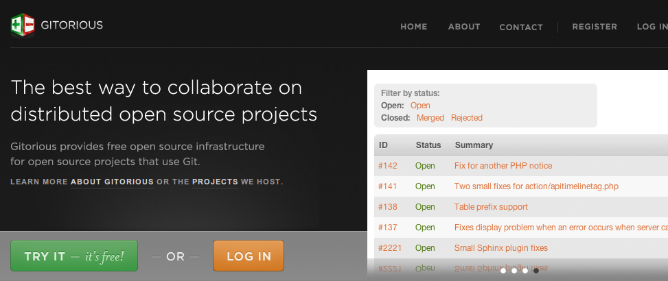

Thomas K. Nilsson, thomas@gitorious.com
Christian Johansen, christian@gitorious.com

The basic principles of distributed version control
$ mkdir myproject
$ cd myproject
$ git init .
$ ls -la
total 24
drwxrwxr-x. 3 christian christian 4096 Jan 2 14:46 .
drwxrwxrwt. 40 christian christian 12288 Jan 2 14:46 ..
drwxrwxr-x. 7 christian christian 4096 Jan 2 14:46 .git$ echo "Hello, world" > hello.txt
$ git status
# On branch master
#
# Initial commit
#
# Untracked files:
# (use "git add <file>..." to include in what will be committed)
#
# hello.txt
nothing added to commit but untracked files present (use "git add"
to track)$ git add hello.txt
$ # Or like this: `git add .`
$ git commit -m "My first commit"
[master (root-commit) 4894391] My first commit
1 file changed, 1 insertion(+)
create mode 100644 hello.txt
$ git status
# On branch master
nothing to commit (working directory clean)$ git log
commit 4894391c0722cb9dd1d67d49b42717d4455534ef
Author: Christian Johansen <christian@cjohansen.no>
Date: Wed Jan 2 14:55:24 2013 +0100
My first commit
$ git show 4894391c0722cb9dd1d67d49b42717d4455534ef$ git show 4894391$ echo "Yes, hello" >> hello.txt
$ git commit -m "Added more intriguing dialogue"
# On branch master
# Changes not staged for commit:
# (use "git add <file>..." to update what will be committed)
# (use "git checkout -- <file>..." to discard changes in working directory)
#
# modified: hello.txt
#
no changes added to commit (use "git add" and/or "git commit -a")$ git commit -am "Added more intriguing dialogue"Git's staging area and `git add -p` will change how you use version control. Especially when combined with a UI that makes these features conveniently available. Example with Emacs and Magit.
With git-log and git-diff
With git-log
With git-grep